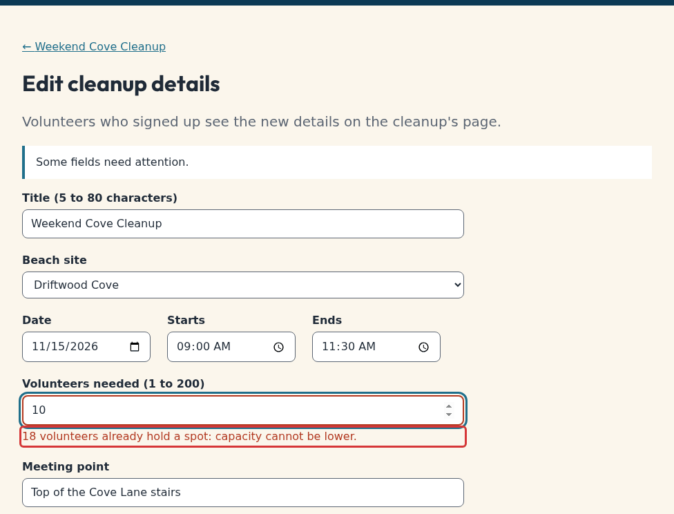

Session 20: React Hook Form + Zod and Complex Forms
How to teach Lessons 8.1 and 8.2: one Zod schema for a form's checks and types, React Hook Form with inferred types and the API's field errors through setError, then a list inside a form (array schemas with row paths, useFieldArray and focus), an error summary and photo uploads, with both projects started in class.
How to Use This Guide
- Session 20 teaches Module 8: Lesson 8.1 (one Zod schema for a form's checks and types, React Hook Form for the form) and Lesson 8.2 (a list in a form, an error summary, uploads). Same rhythm for both: frame → live demo → guided lab in a kit lab → start the lesson project. Exercises, quizzes and journals go home.
- Every command below was run for the output under it, in a learner's terminal on copies of Shoreline Crew HQ exactly as it is at the end of Lessons 8.1 and 8.2; every API answer comes from shoreline-api (a private copy, the dev organizer token). Where a lesson shows the same command, the kit's output is the lesson's card: the generator checks it.
- Keep
lesson_27.htmlandlesson_28.htmlopen (the RHF parts table, the modes, the decision tables). Labs live inlabs/module-20/. - Session 21 opens with Checkpoint 3 (Modules 7 and 8): today's homework is its preparation. Say so at the wrap-up.
The lessons estimate 140 + 160 = 300 minutes; the room has 150. 8.2 is the longest lesson in Part 3. Protect: input versus output types, the API's 400 through setError, the list schema's paths, and focus after add/remove. The projects' later steps (8.1 Steps 3 to 5; 8.2 Steps 4 to 6) go home, with lesson-28-start and lesson-29-start as fallbacks.
Before the Session
- ☐ Run the kit check once:
python3 labs/check_labs.py module-20(8 runs, under a minute, no API). - ☐ Projector machine:
shoreline-hqat the start of 8.1 (lesson-27-start) and a finished copy (lesson-28-end); the API and the dev server running; signed in as Maya; DevTools › Network filtered to4000. A JPEG, a GIF and a photo over 5 MB in a folder for the upload demo. - ☐ Network for npm: 8.1 Step 1 runs
npm install react-hook-form zod @hookform/resolvers. - ☐ Board: "fields hold the input, the submit function gets the output"; the tally-sheet model; "when a click removes the clicked element, decide where the focus goes".
- ☐ Sample data: saving a report completes today's cleanup; restart
node server.tsbetween groups (it signs everyone out).
| Symptom | Cause | Fix |
|---|---|---|
TS2322 Resolver<…> is not assignable… | useForm<z.infer<typeof schema>> | No type argument, or useForm<Input, unknown, Output>. |
TS2769 'required_error' does not exist | Zod 3 code | The error option. |
| The end-time message appears only after other fields are fixed | An object refine without when | when naming the fields the rule needs. |
TS2345 on setError(name, …) | The API's keys are plain strings | A type predicate (isEventField), never a cast. |
| A skipped count saves as 0 | z.coerce.number() on a count | Regex on the text, then transform(Number). |
Upload answers 400 Attach an image in a field named photo. | A hand-written Content-Type header | Leave it out with FormData. |
| The focus jumps to the top after Remove | Nothing receives the focus | A ref on Add a row. |
| Both steps visible (Exercise 3) | hidden overridden by a display rule | .step[hidden] { display: none; }. |
Build warning Some chunks are larger than 500 kB | Zod and RHF in the one bundle | Expected until Lesson 10.1's code splitting. |
Session 20 Agenda (3 hours)
| Clock | Minutes | Segment | What happens |
|---|---|---|---|
| 0:00 | 10 | Warm-up: one description of a valid cleanup | Three retrieval questions: the four places, aria-describedby, the API's 400. |
| 0:10 | 10 | 8.1 Frame and mental model | The sign-up sheet template (Zod) and the clipboard (React Hook Form). |
| 0:20 | 20 | 8.1 Live demo: a type and its checks | The schema, try-schema with Node, z.input and z.output, the when option. |
| 0:40 | 15 | 8.1 Live demo: React Hook Form | useForm + zodResolver with no type arguments, register's typed names, setError for the API's 400, two older-tutorial mistakes. |
| 0:55 | 20 | 8.1 Guided lab | labs/module-20/l8_1-react-hook-form-zod/starter: Tasks 1 and 2 (a join-the-crew schema and form). |
| 1:15 | 10 | Break | Leave "fields hold the input, submit gets the output" on the board. |
| 1:25 | 15 | 8.1 Start the lesson project | Edit a Cleanup's Details, Steps 1 and 2: the libraries and the schema, Plan a cleanup on it. |
| 1:40 | 10 | 8.2 Frame and mental model | The tally sheet on the clipboard: fixed boxes, a table of lines, photos clipped to the back. |
| 1:50 | 20 | 8.2 Live demo: lists, summaries, uploads | Counts without coerce, superRefine paths, useFieldArray and focus, the error summary, FormData and the API's 415/400, steps or one page. |
| 2:10 | 15 | 8.2 Guided lab | labs/module-20/l8_2-complex-forms/starter: Tasks 1 to 3 (the supply checkout). |
| 2:25 | 25 | 8.2 Start the lesson project | The Impact Report, Steps 1 to 3: the shared debris list and schema, save and upload, the error summary. |
| 2:50 | 10 | Wrap-up | Exit ticket (3 questions), homework, bring list for Session 21 (Checkpoint 3). |
| Total | 180 | Ends at 3:00. |
In the room. 140 + 160 minutes on the lesson pages; 150 in the room. Each lesson gets its model, its demos, a guided lab and the start of its project.
Goes home (about 2 to 3 hours). 8.1's project Steps 3 to 5 (the update mutation and loader, the edit form and page, the way in and trying everything); 8.2's Steps 4 to 6 (the photo upload, the form and its page, trying everything); both lessons' Exercises 1 and 2 (Exercise 3 is a stretch); both Quick Quizzes; both journal entries; the labs' remaining tasks. Then revise Modules 7 and 8 for Checkpoint 3.
Protect, in this order: input versus output; setError after a predicate; list paths; focus after add and remove. Cut the Zod 3 and steps demo steps first.
Opening Segment
Warm-up: One Description of a Valid Cleanup
10 min| 6m | Three questions; pairs answer |
| 4m | Call on pairs; bridge: "today the first two places become one" |
- **W1.** Lesson 7.3's homework: how many places in the HQ describe a valid cleanup? Name them. **Answer:** Four: eventForm.ts's types (EventField, EventFormValues), its rules (validateEvent, toNewEvent), client.ts's isCleanupEvent (the shape coming back), and the API's own checks. The first two are today's problem.
- **W2.** In Lesson 3.5's form, what kept a field's message linked to its box for screen readers? **Answer:**
aria-invalidon the box andaria-describedbypointing at the message's id (FieldError). - **W3.** After the API answers 400 with fieldErrors, where did Lesson 7.2 put the messages? **Answer:** Under the matching fields (the API uses the form's field names), plus "Some fields need attention." in the status line.
Lesson Plans
React Hook Form + Zod
80 min- Write a Zod 4 schema that is both a TypeScript type and the checks behind it, with messages people understand
- Tell a schema's input type from its output type (z.input, z.output) and give useForm the right generics
- Build a form with React Hook Form: register, handleSubmit, formState and zodResolver
- Show the API's 400 field errors under the right fields with setError, and a form-wide message with a root error
- Decide when a form needs a library and when React 19's form actions are enough, and say why
| 10m | Frame and mental model |
| 20m | Live demo A: a type and its checks |
| 15m | Live demo B: React Hook Form |
| 20m | Guided lab: Lab 8.1 Tasks 1 and 2 |
| 15m | Start the lesson project (after the break): Steps 1 and 2 |
- Why a library (3m): you built a complete form by hand in 3.5; forms are where bugs collect, and RHF and Zod are what you will meet in existing codebases.
- The sign-up sheet template (4m): the template decides the boxes (the type) and the notes beside them (the rules); every sheet printed from it matches. React Hook Form is the clipboard that holds the sheet while people fill it in.
- What stays (3m): the API is still the authority; some rules only it can check ("18 already signed up").
- The problem (2m). The warm-up's four places on the board; circle the first two. "The type says capacity is text; the rule says a whole number from 1 to 200; nothing connects them."
- A schema: rules with messages (5m). Open
src/api/schemas.ts(finished 8.1 code). The title rule shows Zod 4's error function: one rule, two messages.shoreline-hq/src/api/schemas.tstitle: z .string() .trim() // error can be a function: one rule, a message that fits what was typed .min(5, { error: (issue) => issue.input === '' ? 'Add a title.' : 'Use at least 5 characters for the title.', }) .max(80, 'Keep the title to 80 characters or fewer.'), siteId: z.string().min(1, 'Choose one of the cleanup sites.'),Then the rest:.trim()changes the value before the rules,.refineadds your own rule,z.coerce.number<string>()turns text into a number, the object refine withpathandwhenfor the end time. - Try it with Node (4m). The lesson's
src/try-schema.ts, run with Node (it strips the types):node src/try-schema.ts
{ title: 'Dune Grass Cleanup', siteId: 'north-jetty', date: '2099-06-14', startTime: '09:00', endTime: '11:30', capacity: 12, meetingPoint: 'North jetty steps', description: '' } { title: [ 'Use at least 5 characters for the title.' ], capacity: [ 'Capacity must be a whole number from 1 to 200.' ], endTime: [ 'The end time must be after the start time.' ] }First object: the title lost its spaces and capacity is 12 without quotes. Second: one message per field fromz.flattenError, the end-time message included because ofwhen. Delete the file afterwards. - Two types from one schema (4m). The lesson's Scratch.ts puts the wrong thing in each type:
src/Scratch.ts:4:14 - error TS2322: Type 'number' is not assignable to type 'string'. 4 export const typed: EventFormValues['capacity'] = 12 ~~~~~ src/Scratch.ts:5:14 - error TS2322: Type 'string' is not assignable to type 'number'. 5 export const checked: EventFormData['capacity'] = '12' ~~~~~~~ Found 2 errors in the same file, starting at: src/Scratch.ts:4Board rule: fields hold the input, the submit function gets the output.z.inferisz.output. - Zod 3 code from older tutorials (2m).
required_error(Zod 3):src/Scratch.ts:5:13 - error TS2769: No overload matches this call. The last overload gave the following error. Object literal may only specify known properties, and 'required_error' does not exist in type '$ZodStringParams'. 5 .string({ required_error: 'Add a title.' }) ~~~~~~~~~~~~~~Oneerroroption replaces message/required_error/invalid_type_error;{ message }andz.string().email()still compile but are deprecated (struck through in VS Code).
- useForm without type arguments (3m). EditEventForm:
shoreline-hq/src/components/EditEventForm.tsx
} = useForm({ resolver: zodResolver(eventFormSchema), defaultValues: toFormValues(event), })HoveruseForm: the input type first, the output type last, both fromzodResolver. The lesson's table of parts: register, handleSubmit, formState.errors, isSubmitting, setError. - register knows the names (2m). The lesson's typo:
src/Scratch.tsx:7:19 - error TS2345: Argument of type '"titel"' is not assignable to parameter of type '"capacity" | "date" | "description" | "endTime" | "meetingPoint" | "siteId" | "startTime" | "title"'. 7 return register('titel') ~~~~~~~ Found 1 error in src/Scratch.tsx:7In Lesson 3.5 EventField was written by hand to catch this. - The most common RHF type error (3m).
useForm<z.infer<typeof eventFormSchema>>(…): the end of the message is the story:Type '{ title: string; siteId: string; date: string; startTime: string; endTime: string; capacity: number; meetingPoint: string; description: string; }' is not assignable to type '{ title: string; siteId: string; date: string; startTime: string; endTime: string; capacity: string; meetingPoint: string; description: string; }'. Types of property 'capacity' are incompatible. Type 'number' is not assignable to type 'string'. 9 resolver: zodResolver(eventFormSchema), ~~~~~~~~ Found 1 error in src/Scratch.tsx:9Read from the bottom up:Types of property 'capacity' are incompatible. Fix: no type argument, or all threeuseForm<EventFormValues, unknown, EventFormData>. - When the API says no (5m). Weekend Cove Cleanup is full; the schema accepts capacity 10, the API does not (asked with Maya's token):
PATCH http://localhost:4000/api/events/e08 {"capacity": 10}HTTP/1.1 400 Bad Request content-type: application/json; charset=utf-8 { "error": "validation_failed", "message": "Some fields need attention.", "fieldErrors": { "capacity": [ "18 volunteers already hold a spot: capacity cannot be lower." ] } }Then the code that puts it under the field: - setError, after a type predicate (2m).
shoreline-hq/src/components/EditEventForm.tsx
if (error instanceof ApiError && error.fieldErrors !== undefined) { // 400: the API's own rules said no. Its messages go under the same fields as ours. let first = true for (const [name, messages] of Object.entries(error.fieldErrors)) { if (isEventField(name)) { setError(name, { type: 'server', message: messages.join(' ') }, { shouldFocus: first }) first = false } } setError('root.server', { message: error.message }) } else {
Remove theisEventFieldcheck and tsc refusessetError(name, …): - Without the check.
src/components/EditEventForm.tsx:45:20 - error TS2345: Argument of type 'string' is not assignable to parameter of type '"capacity" | "date" | "description" | "endTime" | "meetingPoint" | "siteId" | "startTime" | "title" | ErrorNamespacePath'. 45 setError(name, { type: 'server', message: messages.join(' ') }, { shouldFocus: first }) ~~~~ Found 1 error in src/components/EditEventForm.tsx:45Do not cast: the API could sendsuppliesProvided, and that message would vanish.
useForm<z.infer<…>>. Coach: read the error from the bottom; which type do the fields hold? (Item 2.)- Casting the API's keys.
name as EventFieldcompiles. Coach: what if the API sends a key the form lacks? (Item 5.) - Expecting React 19's form reset. RHF uses onSubmit, not action: values stay; that is fine here.
Folder: labs/module-20/l8_1-react-hook-form-zod/starter/ with labs/module-20/l8_1-react-hook-form-zod/TASKS.md; reference labs/module-20/l8_1-react-hook-form-zod/solution/. A join-the-crew form (the HQ has none). The type check fails on the test's "checked data" line until the schema's output has a number.
- Task 1 (8m): the schema with an error function for the name,
z.email, the shirt size (text in, a size out), coerced hours. - Task 2 (12m):
useForm+zodResolver,register, messages with ids andaria-describedby. - Task 3 goes home:
setErrorfor the API's 400 afterisJoinField.
As shipped, and the solution:
Tests 7 failed | 1 passed (8) Tests 8 passed (8)
The lesson project is Edit a Cleanup's Details, five steps. In the room: Steps 1 and 2.
- Step 1 (8m): install the three libraries;
src/api/schemas.ts; runnode src/try-schema.ts, then delete it. - Step 2 (7m): eventForm.ts takes its types from the schema; NewEventForm's action uses
safeParseandz.flattenError(tsc lists the places to change). - Goes home: Steps 3 to 5 (updateEventMutation, editEventLoader calling organizersOnly first, the route, EditEventForm and EditEventPage, OrganizerTools' Edit details, trying the 400).

- What do the fields hold, and what does submit get? Answer: the input type (text); the output type (numbers).
- Why no type argument on useForm? Answer: zodResolver carries both types.
- Who has the last word on a rule? Answer: the API.
Workbook self-check, Items 1 to 6.
Answers: Q1 B) The rules and their messages are written once, and the form's types are read from the same schema; Q2 Input string (what the box holds), output number (what the checked data holds); Q3 C) Runs the rule as soon as the two times have no problem, whatever the other fields say; Q4 From the schema: zodResolver(eventFormSchema) carries its input and output types, useForm infers them, and register accepts only the input type's keys; Q5 D) The API could send a key the form does not have, and its message would vanish into an error nobody displays; Q6 A) Zod would add about 25 kB gzip to every visitor's download, while only organizers open the forms. Full set with explanations in the Answer Key.
Support: pairs trace one Save through the lesson's diagram (resolver → messages | save → PATCH → 400 setError | 200 invalidate) before typing.
Stretch: Exercise 2 (a Zod response schema compared with z.ZodType<CleanupEvent>), Exercise 3 (send only dirty fields), Lab 8.1 Task 3.
Complex Forms
70 min- Describe a list inside a form with a Zod array schema, including a rule about the whole list that puts its message on the right row
- Build rows people can add and remove with React Hook Form's useFieldArray, with stable keys, typed field paths and sensible focus
- Build an error summary that takes the focus after a failed save and links to every field with a problem
- Upload a file with FormData: check it in the browser, send it without breaking the request, and explain the API's 413 and 415 answers
- Save with PUT and refresh every cached answer the save changes
- Decide when a long form should become steps, and how to check one step at a time
| 10m | Frame and mental model |
| 20m | Live demo: lists, summaries, uploads, steps |
| 15m | Guided lab: Lab 8.2 Tasks 1 to 3 |
| 25m | Start the lesson project: Steps 1 to 3 |
- What an impact report needs (4m): the lesson's table: a list of unknown length, a dozen boxes, pictures, a lot to fill in.
- The tally sheet (4m): fixed boxes at the top, a table of lines below (the field array), the notice board of problems (the summary), photos clipped to the back with a number (ids).
- Why it matters (2m): line items, attachments and long forms are where real apps spend their form code, and where keys, focus and validation go wrong.
On the finished 8.2 code (lesson-28-end); outputs from the kit's runs.
- Counts: why not coerce (3m). The lesson's comparison, run with Node:
0 Enter a whole number. 12
Coercion turns an empty box into 0; for a count, 0 is a real answer. The HQ checks the text first: - wholeNumber.
shoreline-hq/src/api/schemas.ts
function wholeNumber(max: number, message: string) { return z .string() .trim() .regex(/^\d+$/, message) .transform(Number) .refine((count) => count <= max, message) }
- A rule about the whole list (4m). The lesson's
src/try-impact.ts(a duplicate row and an empty box), with Node:node src/try-impact.ts
bags → Bags must be a whole number from 0 to 500. items.1.count → Count must be a whole number from 0 to 100000. items.2.category → Plastic bottles is already in the list: add to its count. { bags: [ 'Bags must be a whole number from 0 to 500.' ], items: [ 'Count must be a whole number from 0 to 100000.', 'Plastic bottles is already in the list: add to its count.' ] }Every issue has a path:items.2.categoryis row 3's menu.z.flattenErrorkeeps only the first segment (the row is lost): for nested data, paths matter, and the resolver uses them. - Rows with useFieldArray (4m). The two handlers that decide focus:
shoreline-hq/src/components/ImpactReportForm.tsx
function addRow() { const category = nextCategory(getValues('items')) if (category === undefined) return // The new row's count box gets the focus: the kind of debris is already chosen append({ category, count: '' }, { focusName: `items.${fields.length}.count` }) } function removeRow(index: number) { remove(index) // The Remove button is gone: put the focus somewhere that makes sense addRef.current?.focus() }
Key byfield.id, paths by index. Paths are types too: - Typed paths (1m).
src/Scratch.tsx:8:44 - error TS2345: Argument of type '`items.${number}.cuont`' is not assignable to parameter of type '"bags" | "items" | "notes" | "volunteersAttended" | "weightKg" | `items.${number}` | `items.${number}.category` | `items.${number}.count`'. Found 1 error in src/Scratch.tsx:8FieldPath<ImpactFormValues>: template literal types such asitems.${number}.count. - The error summary (2m). One line carries the pattern:
shoreline-hq/src/components/ImpactReportForm.tsx
<ErrorSummary key={submitCount} errors={withRowNumbers(listErrors(errors))} />A new key on every Save: a new summary takes the focus after each failed save, but not while someone fixes fields.shouldFocusError: falsestops RHF fighting for the focus. Links use a click handler (a plain#bagsadds to the history). - Uploads: FormData, and the API checks again (3m).
shoreline-hq/src/api/client.ts
export async function postPhoto(file: File): Promise<Photo> { const body = new FormData() body.append('photo', file) // No Content-Type header: fetch writes multipart/form-data with the boundary that separates the parts const response = await request('/photos', { method: 'POST', body })
No Content-Type header: fetch writesmultipart/form-data; boundary=…. What the API says to a GIF, and to a hand-written header without a boundary (curl against the private API): - 415 and 400 (1m).
{ "error": "unsupported_media_type", "message": "Photos must be JPEG, PNG or WebP images." } HTTP 415 { "error": "validation_failed", "message": "Some fields need attention.", "fieldErrors": { "photo": [ "Attach an image in a field named photo." ] } } HTTP 400 - Should it be steps? (2m). The lesson's decision table: steps fit separate tasks, answers that decide later questions, a review before a big commitment; the tally sheet is one sitting from one source, so one page with a summary. Exercise 3 practices steps anyway (trigger, hidden, focus on the heading).
key={index}on rows. Coach: what does a key promise?field.idstays with the row's data (RHF's documentation asks for it).- Writing the Content-Type header. Coach: who writes the boundary? (fetch, when the body is FormData.)
- No focus after Remove. Coach: Tab after removing: where are you? (Item 9.)
Folder: labs/module-20/l8_2-complex-forms/starter/ with labs/module-20/l8_2-complex-forms/TASKS.md; reference labs/module-20/l8_2-complex-forms/solution/. A supply checkout: what a team lead takes from the shed.
- Task 1 (6m): counts by regex and transform (empty is not 0), each item once with
superRefine,path: [index, 'item']andwhen. - Task 2 (6m):
useFieldArray, Add a row withfocusName, Remove with focus on Add. - Task 3 (3m):
checkSheet(file): JPEG, PNG or PDF, 2 MB.
As shipped, and the solution:
Tests 9 failed | 1 passed (10) Tests 10 passed (10)
The lesson project is The Impact Report, six steps. In the room: Steps 1 to 3.
- Step 1 (10m): utils/debris.ts, the report schema;
node src/try-impact.ts, then delete it. - Step 2 (7m): putImpact and postPhoto in client.ts; saveImpactMutation (setQueryData, then invalidate ['events'] and ['impact']) and uploadPhotoMutation.
- Step 3 (8m): formErrors.ts and ErrorSummary.
- Goes home: Step 4 (PhotoUpload), Step 5 (the form, its page, the way in), Step 6 (try everything), the checklist.

- Why not coerce a count? Answer: an empty box would become 0.
- What is
errors.items?.[1]?.count? Answer: row 2's count error, if any: the errors tree has the values' shape. - Why
key={submitCount}on the summary? Answer: each failed save mounts a new summary that takes the focus.
Workbook self-check, Items 7 to 12.
Answers: Q7 Coercion turns an empty box into 0, a valid count, so a skipped box would quietly report "zero"; checking the text first gives a message; Q8 C) ['items', 2, 'category'] (the path relative to the list is [2, 'category']); Q9 B) On the page's body: the next Tab starts again from the top; Q10 D) accept is only a hint to the picker: "All files", drag and drop and a 40 MB photo all get past it; Q11 A) The Impact tab shows the new numbers at once, instead of the old ones for a moment; Q12 B) A # link adds #bags to the address and a history entry, so Back first undoes the jump. Full set with explanations in the Answer Key.
Support: build the field array first with only Add (no focus), then add focus, then Remove.
Stretch: Exercise 2 (a blob: preview, revoked in an effect's cleanup), Exercise 3 (the report in two steps), the Going Further (several photos and drag and drop).
Closing
- Capacity's input and output types? Answer: string in, number out.
- Where does the duplicate-row message go, and how does it get there? Answer: under the repeated row's menu:
addIssuewithpath: [index, 'category']. - Why no Content-Type header on a photo upload? Answer: fetch writes multipart/form-data with the boundary; a hand-written header has none (the API answers 400).
- Finish both lesson projects: 8.1 Steps 3 to 5 and the checklist (including the list of your app's forms); 8.2 Steps 4 to 6 and the checklist (your app's line items, files, and the steps decision).
- Lesson exercises: 8.1 Exercises 1 and 2; 8.2 Exercises 1 and 2. Exercise 3 of each is a stretch.
- Both Quick Quizzes on the lesson pages.
- Labs: Lab 8.1 Task 3; Lab 8.2's stretch (an error summary).
- Journal: both entries.
- Checkpoint 3 next session (Modules 7 and 8, 30 minutes): reread the four lessons' Key Takeaways and redo the four Quick Quizzes.
- The course folder with the finished Lesson 8.2 code (or
lesson-29-start), the API runnable. - Session 21 (Lesson 9.1, Testing Components) installs Vitest and Testing Library: a working connection.
- Install at home:
npm installinlabs/module-21/checkpoint-3/starterandlabs/module-21/l9_1-testing-components/starter, then checknpm testshows the TODO failures (Checkpoint 3 starts only when everyone's tests run). - The list of three things you would hate to break (8.2's Before the Next Lesson): your first test ideas.
If You Run Long or Short
- Protect: input versus output; setError after a predicate; list paths; focus after add and remove.
- Cut first (saves 4m): the Zod 3 step and the steps decision (both in the lessons).
- Cut second (saves 15m): 8.1's project start goes home.
- Cut third (saves 10m): the 8.2 lab's Task 3.
- 8.1 Exercise 1 live:
mode: 'onTouched'andisDirty(no empty saves). - 8.2 Exercise 1 live: the error summary on the edit form.
- Upload the GIF, the big PNG and a JPEG live with the Network tab open.